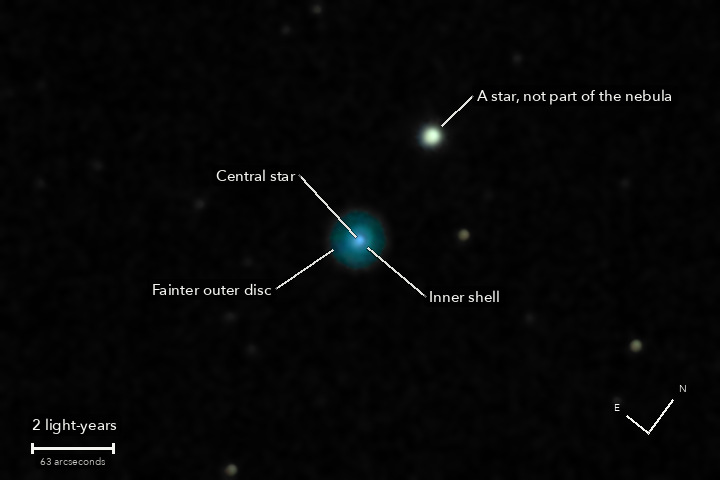

NGC 2392
A planetary nebula in Gemini
The same kind of object as tonight's NGC 1535, taken the same way. The star at the centre was once much like the Sun. It has thrown off its outer layers twice: the faint outer disc first, and the bright inner shell after it. What is left of the star is the hot point in the middle, which makes both of them glow. William Herschel found it in 1787.
What you are looking at

Swipe sideways to see the rest. Tap the picture for full size.
- Distance
- Roughly 6,500 light-years (not well known: estimates run from 3,000 to 7,000)
- This picture spans
- About 18 light-years; the outer disc is about 2 across, the inner shell a little over half of one
- The light left
- Roughly 6,500 years ago: if that distance is right, before writing was invented
- Honest note
- Cloud was thickening as this was taken, so it holds little more than a minute of light. And as with NGC 1535, the nebula's blue-green is purer than any screen can show
For photographers
84 seconds of light, taken the same way as NGC 1535; cloud took the last ten frames.
- Exposures
- 21 x 4 s at ISO 1600: 84 seconds. Nothing clipped: the nebula peaks at 8 percent of the range in a 4 s frame
- Frames
- 32 taken, 21 kept. The first after the slew was dropped by rule; the last ten were lost to cloud, when the stars fell below half their brightness. None trailed. Cloud thickened through the run, so the later frames kept are scaled up and weighted down: the stack is worth about 15 clear frames, a minute of light
- Sampling
- 0.777 arcsec per pixel: one pixel per 2 x 2 colour cell, never enlarged, as for NGC 1535. Stars 5.0 arcsec wide (half-flux)
- Field
- 9.3 x 6.2 arcmin: a 720 x 480 crop round the nebula, turned by quarter turns only (no resampling after the stack). North 38 degrees clockwise of up
- When
- 13 October 2026, after midnight, over 10 minutes. About 50 degrees up
- Registration
- Rotation and shift on 81 to 156 stars, 0.8 to 1.1 px rms; the field turned 0.23 degrees over the frames used. The air spread red from blue by 0.48 arcsec: measured on 62 stars and taken out in the one resampling
- Calibration
- No darks and no flat frames were taken. Divided by the night's flat, built from the open sky of the NGC 891 run. This run's own sky is too faint in 4 s to check the flat's dust, and the nebula sat on the same pixels throughout, so a shadow there would not average out. Hot pixels from the run itself (580 to 620 per colour plane)
- Stacking
- RAW colour planes (no demosaic), hot pixels by 3 x 3 median, registered on stars with rotation, sigma-clipped weighted mean. One sky constant per colour per frame; in the picture only, a sky plane per colour is subtracted as well
- What is real
- The central star, a clear star-like point, far stronger than in NGC 1535: 716 DN at the centre against 136 at 4.7 arcsec out. The inner shell, a blue-green shoulder of light from about 4 to 10 arcsec out. The fainter outer disc: in the ring 14 to 25 arcsec out the green light is 17.3 DN where spilled inner light would leave 0.9, 136 times the noise, and the odd and the even frames each show it (95 and 112 times). The light ends 28 to 34 arcsec from the centre
- Not seen
- A dark gap between the star and the inner shell, the shell's rim as a ring, knots or filaments: with stars 5.0 arcsec wide the star's own image reaches the shell. The star images in this stack are slightly lopsided, so no claim is made about the nebula's shape
- Colour
- The camera's daylight white balance and colour matrix, no saturation added. As with NGC 1535, the green-blue of doubly ionised oxygen at 501 nm lies outside what a screen can show: the matrix gives it a negative red, shown as zero across the outer disc. The stars read slightly green-yellow, as in tonight's other pictures: that is the camera, not the stars
- Finish
- Brightness smoothed 1.5 px (NGC 1535: 1.0), colour 3.5 px, arcsinh stretch. Black at the 60th percentile, S-curve 0.15. Dark sky smoothed (median 3 px, bilateral 4 px). The 8th magnitude star north of the nebula is five times brighter than the nebula's centre: its core is at full scale in green for a few pixels
- Telescope
- Celestron 8SE Schmidt-Cassegrain: 203 mm aperture, 2,081.7 mm focal length by plate solve of this stack, f/10.3
- Camera
- Sony a6000, stock, at prime focus: APS-C 23.5 x 15.6 mm, 6000 x 4000, 3.9 micron pixels, RAW
- Mount
- Sky-Watcher EQ6-R, unguided. Set down without polar alignment, about 5 degrees off the pole; aligned from four plate-solved photos (about 1 arcminute), both axes driven from that model
© 2026 Brad Gessler · Celestron 8SE (8 inch, f/10.3) and Sony a6000 on an EQ6-R · San Francisco Bay Area · night of 12 October 2026
Capture and mount: Observatory (Elixir on a Raspberry Pi 3). Stacking: numpy, OpenCV, rawpy. Plate solving: astrometry.net. Stacked from the camera's RAW frames. Nothing generated.
© 2026 Brad Gessler. The pictures and the words are his own; all rights reserved.